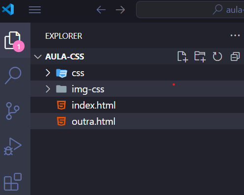
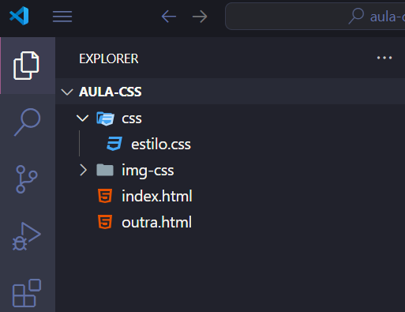
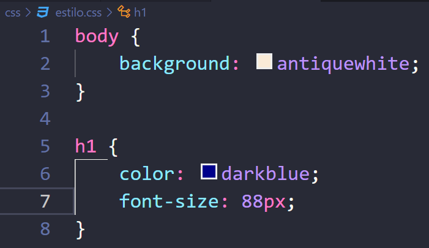
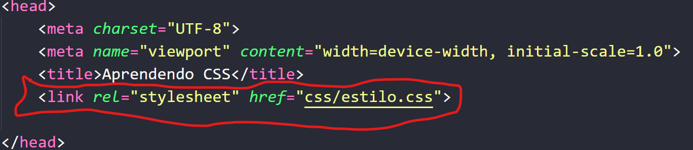

A 3ª forma de trabalharmos com o CSS é o CSS Externo.
A primeira prioridade css é a do css que estiver direto em uma tag, ou melhor dizendo, o CSS inline.
O CSS Externo é a maneira que a maioria dos site trabalham e seria a maneira mais "correta"
de se utilizar o CSS, por mais que o CSS em linha ou CSS
interno funcionem bem, nem sempre se tornam a forma mais produtiva de se trabalhar com o
CSS. Vamos aprender como a como criar um arquivo CSS que irá conter as
propriedades da nossa página.
Veja a seguir o passo a passo:
Primeiro vamos precisar criar uma nova pasta dentro do nosso projeto, vamos nomear de css.

Após isso, vamos criar um novo arquivo dentro dessa pagina chamado estilo.css.

Dentro desse arquivo, vamos adicionar as propriedades CSS que desejamos. Caso já tenha
adicionado suas propriedades desejadas no CSS incorporado, basta selecionarmos nossas
propriedades e darmos o seguinte comando: Ctrl+X e colocarmos dentro do arquivo
estilo.css.

Agora nos precisamos realizar uma invocar o arquivo .CSS para que ele rode dentro da nossa
página principal, ou seja, dentro da index.html. Para isso, vamos precisar fazer a
utilização da seguinte tag dentro do head do nosso projeto principal:

Basicamente, podemos dizer que o arquivo .CSS funciona em cascata e são folha de estilo
porque nós não necessariamente precisamos ter só um tipo de folha de estilo, podemos ter varias folhar de estilo
de forma simultânea, por exemplo, nos poderíamos separar todas as coisas, ou seja, em uma folha de estilo
poderíamos colocar tudo que esteja relacionado com os seletores de títulos e chamar essa folha de
titulo.css, poderíamos fazer uma outra folhar para tamanhos de fonte e enfim, poderíamos ter
múltiplos arquivos CSS dentro do mesmo projeto. No geral sempre teremos 1 arquivo que será o
padrão que vamos poder dar vários nomes para o geral da página, ai podemos utilizar outros css complementares
para fazer outras mudanças no nosso arquivo html.
Vamos relembrar as hierarquia do css:
CSS em linha.
O CSS interno é a segunda prioridade da nossa hierarquia, caso nós realizarmos o uso de um CSS interno e um CSS inline, a prioridade sempre será para o CSS inline. Resumindo, supondo que criássemos uma propriedade CSS falando que todos os <h1> serão da cor verde e no total tenhamos 6 tags <h1> e queremos que apenas 1 seja da cor vermelha, basta adicionar uma propriedade CSS inline, que a prioridade para aquela tag será o CSS inline (CSS em linha=CSS direto na tag).
O CSS externo seria a ultima prioridade de toda a ordem de uso CSS, caso utilizassémos as 3 estilos de CSS,
o externo seria a ultima prioridade de todas.
As características de cada estilo de CSS são:
Dica: Por mais que tenhamos aprendido a utilizar as 3 maneiras de CSS, é recomendado que selecionamos apenas 1 modo para utilizar, a recomendação é que utilizamos sempre o CSS externo por conta de todas suas vantagens vistas anteriormente, e também pelo fato de manter nossa página HTML mais "limpa" e organizada!
Voltar para a principal!Em resumo, o CSS Externo é a melhor abordagem para estilizar páginas da web de forma organizada e eficiente. Ao separar o código CSS do HTML, garantimos maior flexibilidade, reutilização de estilos e manutenção simplificada. Embora existam outras formas de aplicar CSS, como em linha e incorporado, o uso de um arquivo externo permite criar projetos escaláveis e com um código mais limpo. Adotar essa prática desde o início ajudará a desenvolver páginas mais profissionais e preparadas para o mercado de trabalho.